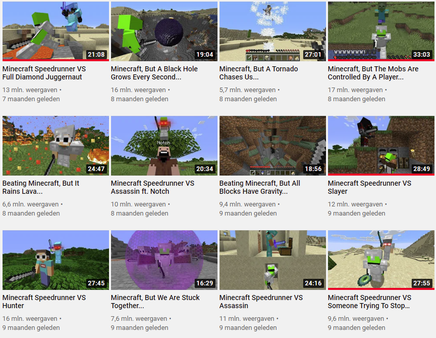
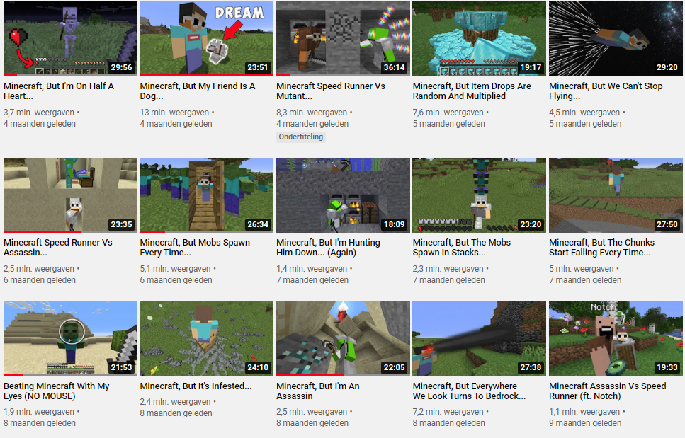

with a game like minecraft that's so free in playstyle, a lot of youtubers poped up. with diffrent types of video content survival series technical youtubers even programmers editing the java code of minecraft to how they see fit.
dream youtubepage homepage| dream is one of the amazing youtubers who i wacht he programs his own plugins. and started a complete programing trent among yoububers. his video's are super fun and he grew his chanel from 1 mil to 10 in 1 year.-----> |  |
|  | there are also friends from dream who also minecraft. geogenotfound is one of dreams friends that also programs and has disability. he is a great yoububer and i get so inspirerd by the plugins they make for minecraft. |